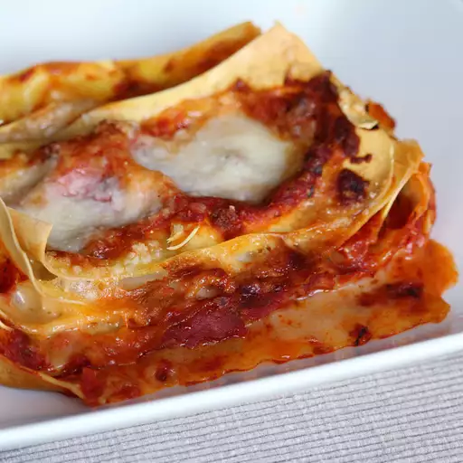

Lasagna

Description
This is the classic lasagne alla Bolognese recipe from the Emilia region in Northern Italy.
Bolognese sauce made with mixture of beef and pork mince, and the addition of red wine and cinnamon make it truly authentic
Ingredients
- 1 onion
- 11 ounces ground beef and pork
- 1 carrot chopped and 1 shallot minced
Steps
- Heat olive oil over medium heat, cook and stir onion, carrot and shallot for ~10mins
- Pour red wine nad increase heat ~3 mins. Add tomatoes and bring to boil
- Boil large pot of lightly salted water. Cook lasagna noodles ~8mins
- Preheat oven to 350 degrees
- Pour bolognese sauce over bottom of baking dish, top with noodles and cheese; repeat layers
- Bake in preheated oven until bubbling and top is golden brown